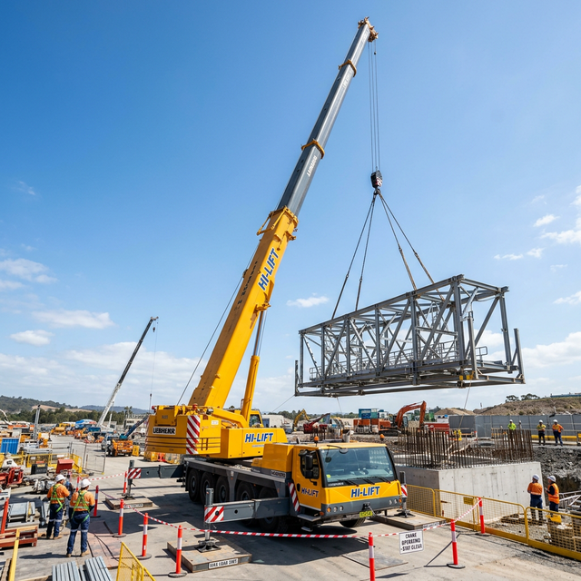
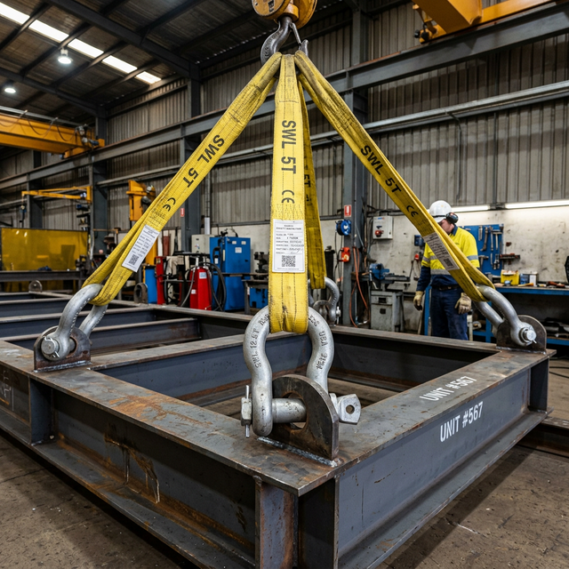

CR210 Superstructure Lifting Plan
This document outlines the standard procedure and safety requirements for the lifting and installation of the CR210 Superstructure using heavy lifting equipment.
1. Objective
To ensure the safe and controlled lifting of the CR210 superstructure component from the transport trailer to the final installation foundation.
2. Prerequisites
-
Permit to Work: Valid lifting permit must be issued and signed by the Site Manager and Lifting Supervisor.
-
Weather Conditions: Wind speeds must be below 10 m/s. No lifting during rain or poor visibility.
-
Ground Conditions: Outrigger pads must be placed on compacted, level ground capable of supporting the crane’s maximum load pressure.
-
Exclusion Zone: Establish a 360-degree exclusion zone with physical barriers and "No Entry" signage.
3. Equipment & Rigging Specifications
 Figure 1. 200T Mobile Crane Operation
|
 Figure 2. Rigging Detail (4-Point Hitch)
|
-
Primary Crane: 200T Mobile Crane (refer to Load Chart #99-A).
-
Slings: 4x 10T Webbing Slings (Color coded, valid inspection tag).
-
Shackles: 4x 12.5T Bow Shackles (Working Load Limit certified).
-
Tag Lines: 2x 15m Tag lines for rotational control.
4. 4. Lift Preparation
-
Toolbox Talk: Conduct a mandatory safety briefing for the entire lifting team (Crane Operator, Rigger, Slinger, and Signalman).
-
Equipment Inspection: Visually inspect all rigging gear for fraying, cracks, or deformation.
-
Weight Verification: Confirm the superstructure weight (nominal 24.5 Tons) matches the lifting plan calculations.
-
Sling Connection: Attach slings to the designated lifting lugs on the CR210 frame using the specified 4-point hitch.
|
Do not use improvised lifting points. Use only the factory-installed lifting eyes verified for this component weight. |
5. 5. Lifting Sequence
-
Initial Tension: Raise the hook slowly until slings are taut. Stop and check all connections.
-
Trial Lift: Lift the component 100mm off the trailer. Hold for 2 minutes to verify balance and hoist stability.
-
The Lift: Hoist the superstructure steadily to a clear height (min 500mm above obstacles).
-
Slewing: Slew the crane slowly towards the foundation. Tag lines must be used to prevent swinging.
-
Positioning: Lower the component onto the foundation bolts. Use guide pins to ensure precise alignment.
-
Release: Once the weight is fully supported by the foundation and secured, slacken the slings and remove rigging.
|
Personnel must NEVER stand under a suspended load. Safety is the absolute priority over schedule. |
6. 6. Safety Checkpoints
-
Signalman: Only one designated signalman (wearing high-vis orange) is allowed to communicate with the crane operator.
-
Dynamic Load: Avoid sudden braking or rapid slewing which can cause dynamic load spikes.
-
Grounding: Ensure crane is properly grounded if working near overhead power lines.